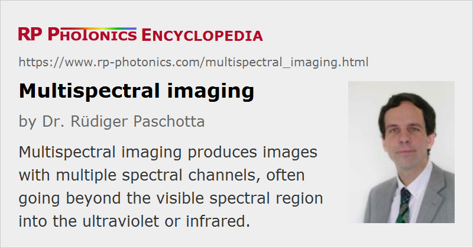

Multispectral Imaging
Definition: imaging which provides images with multiple spectral channels
More general term: imaging
German: multispektrale Bildgebung
Category: vision, displays and imaging
How to cite the article; suggest additional literature
Author: Dr. Rüdiger Paschotta
Multispectral imaging means methods for spectral imaging where one obtains images corresponding to at least a couple of spectral channels – sometimes more than ten. The used spectral regions are often at least partially outside the visible spectral range, covering parts of the infrared and ultraviolet region. For example, a multi-spectral imager may provide wavelength channels for near-UV, red, green, blue, near-infrared, mid-infrared and far-infrared light – sometimes even thermal radiation (→ thermal imaging).
In principle, one might also consider color photography as means for multispectral imaging, but multispectral imagers typically offer non-overlapping wavelength channels, and also typically more than three channels.
While some multispectral imaging devices (also called multispectral cameras) are used on space satellites and airplanes (see below), there are also hand-held devices as well as imaging devices installed in industrial settings, for example.
Multispectral cameras are often customized for specific applications, particularly concerning the used spectral bands.
Operation Principles
Multispectral Image Sensors
For a limited number of wavelength channels (e.g. 5 or 8), one may use a kind of image sensor which for each pixel has multiple photodetectors, one for each wavelength channel – similar to an RGB sensor as used in a photo camera. While this operation principle leads to a simple optical setup, it has some limitations:
- One requires a specialized image sensor according to the required spectral channels.
- Each photodetector covers a certain area, and all light outside the corresponding wavelength region is lost. This implies a disadvantage in terms of sensitivity, particularly when the number of wavelength channels gets larger.
- It may be difficult to obtain high performance of the imaging system when it needs to cover a very wide spectral region overall.
Those regions, that technical approach is not very widespread.
Multispectral Wheel Cameras for Spectral Scanning
One can realize spectral scanning by adding a multispectral wheel to a conventional camera with a broadband response. Such a wheel contains multiple optical bandpass filters for selecting different wavelength regions. The wheel may be continuously rotating, or alternatively one may randomly select one filter at a time with computer control. This technical approach has the advantage that one can easily choose from a variety of filters, depending on the specific application.
Combination of Cameras or Image Sensors
One may employ a combination of cameras, for example one for visible light (with 3 or 4 channels) and one or more infrared cameras. Each of the cameras may be equipped with bandpass filters for limiting the sensitivity to a certain spectral region. Each optical system can then be optimized for the relevant spectral region, and less specialized image sensors are required. Disadvantages are that one requires multiple camera objectives and needs to ensure good spatial overlap of the obtained images (which is most difficult for near objects).
A mixed approach is to use common optics for all wavelengths, but to separate the different wavelengths channels before sending the light to several image sensors.
Scanning Instruments
One can also employ the principle of scanning imagers, which is most often realized for hyperspectral imaging. The most common method is to select only image information along a line, using an optical slit in an image plane, and to disperse the different wavelength components in the direction perpendicular to that line. A complete image needs to be assembled by combining recordings for different orientations of the camera, the slit or the object. One may not necessarily assign one spectral bin to each pixel in the direction of spectral dispersion, but combine multiple pixel according to the required spectral channels.
The principle of line scanning is often used with instruments in moving objects such as airplanes and satellites; it is sufficient to subsequently make recordings for one line perpendicular to the flight direction, and to assemble those to obtain complete images, which can cover large elongated areas. Similarly, stationary scanning instruments are used for inspecting objects on conveyor belts in industrial factories.
One may alternatively use point scanning, which has the advantage that one can use a simple kind of spectrometer, for example an acousto-optic tunable filter. However, this leads to tentatively longer acquisition times and stronger motion artifacts.
Applications of Multispectral Imaging
Some examples for applications of multispectral imaging are shortly explained in the following:
- Multispectral instruments on satellites are used for various kinds of Earth monitoring from space, for example for geological surveys, for environmental monitoring and for military surveillance. Various wavelengths channels can be used for monitoring vegetation (e.g. agricultural crops, biomass mapping), while others are useful for detecting minerals, non-authorized land use, buildings, etc.
- Smaller regions on Earth can be monitored with instruments on airplanes or drones, which allow for higher spatial resolutions. The purposes can be similar is for satellite instruments, for example monitoring the development of agricultural crops or the detection of forest fires.
- Space- or ground-based military installations can be used for detecting and tracking aircraft and missiles. Multispectral data can be beneficial to obtain more specific information on those objects.
- For medical diagnostics, one can take multispectral images e.g. of the skin.
- Some applications are in colorimetry; it can be helpful not only to have more complete spectral information than only of RGB type.
- Objects with specific spectral features can be used for authentication purposes, preventing the simple use of color copiers.
Suppliers
The RP Photonics Buyer's Guide contains 9 suppliers for multispectral imaging instruments.
Questions and Comments from Users
Here you can submit questions and comments. As far as they get accepted by the author, they will appear above this paragraph together with the author’s answer. The author will decide on acceptance based on certain criteria. Essentially, the issue must be of sufficiently broad interest.
Please do not enter personal data here; we would otherwise delete it soon. (See also our privacy declaration.) If you wish to receive personal feedback or consultancy from the author, please contact him e.g. via e-mail.
By submitting the information, you give your consent to the potential publication of your inputs on our website according to our rules. (If you later retract your consent, we will delete those inputs.) As your inputs are first reviewed by the author, they may be published with some delay.
See also: spectral imaging, hyperspectral imaging
and other articles in the category vision, displays and imaging
|  |
If you like this page, please share the link with your friends and colleagues, e.g. via social media:
These sharing buttons are implemented in a privacy-friendly way!